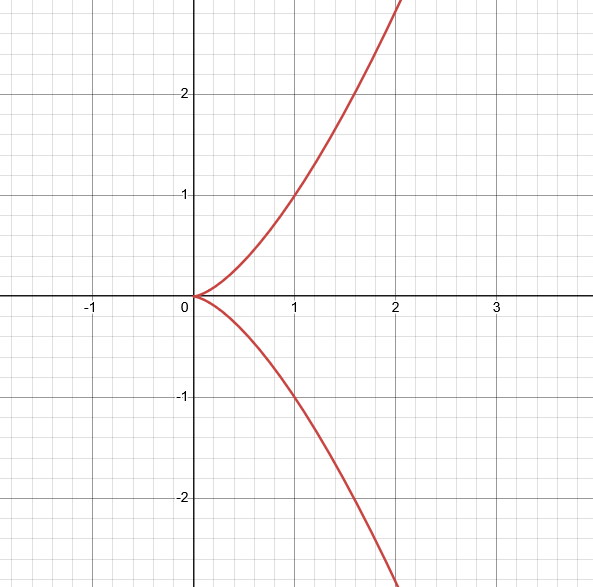

Review of the Classical Notion of Tangent Plane
Before we move on to our measure-theoretic construction of a tangent plane, we should first review the notion of a tangent plane that we are all familiar with.
We can start with a function \( f : \mathbb{R}^{n-1} \rightarrow \mathbb{R} \), and let's say, for the time being, that it is smooth, i.e., all the partial derivatives exist and are continuous.
Then the graph of \( f \), given by \( \Gamma = \left\{ (x, f(x)) \ | \ x \in \mathbb{R}^{n-1} \right\} \), is an \(n-1\) dimensional surface in \( \mathbb{R}^n \).
To find the tangent plane at a given \( x = (a, f(a)) \in \Gamma \), take any \( v \in \mathbb{R}^{n-1} \). Then the curve
\[ r : \mathbb{R} \rightarrow \Gamma, \ \ r(t) = (a + tv, f(a + tv)) \]
is the "trace on \( \Gamma \) of the line through \( a \) in the direction of \( v \)".
It's derivative at \( t = 0 \) is a vector that intuitively must lie on the tangent plane, i.e.,
\[ r'(0) = ( v, D_v f(a) ) = ( v, \nabla f(a) \cdot v ) \in T_x \Gamma. \]
So then the classical notion of a tangent plane is the collection of all of these vectors:
\[ T_{(a,f(a))} \Gamma = \left\{ (v, D_v f(a)) \ | \ v \in \mathbb{R}^{n-1} \right\}. \]
It is important to note that the vector \( (-\nabla f(a), 1) \) is perpendicular to \( T_{(a,f(a))} \).
Tangent Planes on \(C^1\) Surfaces
So far our notion of a tangent plane is fairly restrictive. We have only discussed them as images of functions. What about, say, the unit ball in \( \mathbb{R}^n \)?
To generalize our notion of a tangent plane, let's introduce the definition of a \( C^1 \) Surface:
\[ \boxed{ \begin{gathered} \text{\underline{Definition.}}\\
M \subset \mathbb{R}^n \text{ is a } k \text{-dimensional } C^1 \text{ surface if it is the image of a } C^1 \text{ bijection }\\
f : E \subset \mathbb{R}^k \rightarrow M\\
\text{ with } Jf \neq 0 \text{ everywhere on } E. \end{gathered}}
\]
Here \( Jf(x) = \sqrt{\det ( \nabla f(x)^T \nabla f(x))}\) is the Jacobian of \( f \).
As a side note, why do we require the Jacobian to be nonzero everywhere? Take the function \( f(t) = (t^2, t^3) \). This is \( C^1 \), bijective onto its image, but
\[ Jf(t) = \sqrt{\begin{pmatrix} 2t & 3t^2 \end{pmatrix} \begin{pmatrix} 2t\\ 3t^2 \end{pmatrix}} \implies Jf(0) = 0. \]
As we can see by picture, \( f \) has a cusp at the origin, which absolutely violates what we know \(C^1 \) to mean!

With this definition of a \( C^1 \) surface in hand, we can reformulate our notion of a tangent plane as \[ T_{f(x)} M = \left\{ \nabla f(x)y \ | \ y \in \mathbb{R}^k \right\}. \] This definition is motivated by the Taylor expansion for a \(C^1 \) function: \[ f(y) = f(x)(y-x) + \nabla f(x)(y-x) + \mathcal{O}(|y-x|), \] and so the first two terms give us our desired linear approximation to \( f \).
The Measure-Theoretic Definition of a Tangent Plane
Our notion of a tangent plane so far fully relies on our usage of derivatives, which further relies on our having obtained a function to parametrize the surface. But what happens if our surface is
extremely complex, and a parametrization is difficult to obtain? Can we reformulate our notion of a tangent plane in other ways?
One such way is through the usage of measure theory.
Take a \( C^1 \) surface \( \Gamma \). For \(x \in \Gamma \), and for a small number \( r > 0 \), form the set
\[ \Gamma_{r,x} = \{ y \ | \ ry + x \in \Gamma \}. \]
In other words, \( \Gamma_{r,x} \) is the surface obtained by zooming in to \( \Gamma \) at the point \( x \), cutting out that "zoomed-in" region,
shifting it to the origin, and then rescaling back to its original size.
So, \( \Gamma_{r,x} \) consists of all those points that, after being shrunk by \( r \) and shifted to \( x \), lie on \( \Gamma \).
Intuitively, we see that, for very small \( r \), our surface \( \Gamma_{r,x} \) looks similar to the tangent plane \(T_x \Gamma \). As a result, we should expect that
\[ \mathcal{H}|_{\Gamma_{r,x}} \rightharpoonup \mathcal{H}|_{T_x \Gamma}. \]
Can we prove that our intuition holds?
A simple case would be a \(C^1\) curve in \( \mathbb{R}^n \),
\[ \Gamma = \gamma((a,b)), \ \ \gamma : (a,b) \subset \mathbb{R} \rightarrow \mathbb{R}^n \text{ is } C^1 \text{ and injective with } \gamma' \neq 0 \text{ on } (a,b). \]
Then the tangent plane at \( x_0 = \gamma(t_0) \) is
\[ T_{x_0} \Gamma = \left\{ s\gamma'(t_0) \ | \ s \in \mathbb{R} \right\}. \]
First note that, for any Borel \( A \subset \mathbb{R}^n \),
\[
\begin{aligned}
\mathcal{H}|_{\Gamma_{x_0,r}} (A)
&= \mathcal{H} (A \cap \{y \mid ry+x_0 \in \Gamma \})\\
&= \mathcal{H} \left( A \cap \frac{\Gamma-x_0}{r} \right)\\
&= \frac{1}{r} \mathcal{H} \left( rA \cap (\Gamma-x_0) \right)\\
&= \frac{1}{r} \mathcal{H} \left( (rA + x_0) \cap \Gamma \right)\\
&= \frac{1}{r} (\Phi_{x_0,r})_\# \mathcal{H}|_\Gamma (A),
\end{aligned}
\]
where we have defined \( \Phi_{x_0,r}(y) = \frac{y-x_0}{r} \).
So, for any \( \varphi \in C_c^0(\mathbb{R}^n) \),
\[
\begin{aligned}
\int_{\mathbb{R}^n} \varphi d \mathcal{H}|_{\Gamma_{x_0,r}}
&= \frac{1}{r} \int_{\mathbb{R}^n} \varphi d \left( (\Phi_{x_0,r})_\# \mathcal{H}|_\Gamma \right)\\
&= \frac{1}{r} \int_{\Gamma} (\varphi \circ \Phi_{x_0,r}) d \mathcal{H}\\
&= \frac{1}{r} \int_{\Gamma} \varphi \left( \frac{y-x_0}{r} \right) d \mathcal{H}(y)\\
&= \frac{1}{r} \int_a^b \varphi \left( \frac{\gamma(t) - \gamma(t_0)}{r} \right) |\gamma'(t)| dt\\
&= \int_{-\frac{t_0-a}{r}}^{\frac{b-t_0}{r}} \varphi \left( \frac{\gamma(t_0 + rs) - \gamma(t_0)}{r} \right) |\gamma'(t_0 + rs)|ds\\
&\rightarrow \int_{\mathbb{R}} \varphi(s \gamma'(t_0)) |\gamma'(t_0)|ds = \int_{\mathbb{R}^n} \varphi d\mathcal{H}|_{T_{x_0} \Gamma}, \ \ \text{ as } r \rightarrow 0^+.
\end{aligned}
\]
And so we have proved our claim!
It turns out that, with a few more powerful tools, the above can be extended to any \( k \)-dimensional \( C^1 \) surface \(\Gamma \subset \mathbb{R}^n \), i.e., that
\( \mathcal{H}|_{\Gamma_{x_0,r}} \rightharpoonup \mathcal{H}|_{T_{x_0} \Gamma}\).
As a result, it is natural to define a tangent plane to a Borel set \( M \subset \mathbb{R}^n \) at \( x \in M \) as the \( k \)-dimensional surface \( \pi_x \) such that
\( \mathcal{H}|_{M_{x,r}} \rightharpoonup \mathcal{H}|_{\pi_x} \), if it exists.
In this case, we call \( \mathcal{H}|_{M_{x,r}} \) the \( k \)-dimensional blow-ups of \( \mathcal{H}|_M \) at \( x \) (I presume this name comes from the process we described earlier, we are essentially
"blowing up" the small region of \( M \) near \( x \)).
Rectifiable Sets
It is natural to ask whether our new definition of a tangent plane is more general than the classical definition. In other words, with our measure-theoretic definition,
can we obtain tangent planes on surfaces that the classical definition can't?
A natural weaker assumption to work with than \( C^1 \) surfaces are Lipschitz surfaces. This way, "rough" behavior along the boundary is allowed, such as cusps and corners.
We can further weaken our assumption by allowing the surface to be "Lipschitz almost everywhere." This leads into the definition of a Rectifiable surface.
\[ \boxed{ \begin{gathered} \text{\underline{Definition.}}\\
M \subset \mathbb{R}^n \text{ is countably } \mathcal{H}^k \text{-rectifiable if there exists countably many Lipschitz maps}\\
f_i : \mathbb{R}^k \rightarrow \mathbb{R}^n \text{ such that}\\
\mathcal{H}^k \left( M \backslash \bigcup_{i=1}^{\infty} f_i(\mathbb{R}^n) \right) = 0.
\end{gathered}}
\]